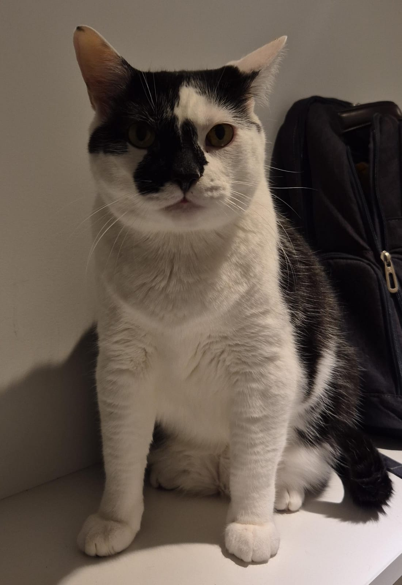

Let Me Introduce You to Me... and My Cats
Hi! My name is Andrés Alexander Manuel Mendoza-Bernardo Guerra. In my free time, I enjoy playing video games—especially Genshin Impact, which I often stream on Twitch for my Spanish-speaking community.
The only sport I really enjoy practicing is karate, though I haven’t been able to train lately due to a lack of time. When it comes to food, I’m not picky at all—I can eat just about anything, as long as it’s not too spicy (I don’t handle spice very well). I also enjoy cooking when I have the time, partly because I like to know exactly what I’m eating, and partly because I just have a lot of fun doing it.

One of my biggest passions is aquariums and fish. There’s something incredibly peaceful about being near them—they help me relax and feel at ease. But as life would have it, I ended up living with three cats instead! Over time, I grew to love them deeply, and now I consider them part of my family.
Now, take a look at them !!!!!
PANTRO🧗😿⚡
This is Pantro, a beautiful and agile tabby cat with a cautious heart. He’s nervous and anxious most of the time, often startled by the smallest sounds or sudden movements. Despite his skittish nature, Pantro is impressively athletic—he’s always the one climbing to the highest spots in the house, whether it’s shelves, furniture, or even doors.
What makes Pantro truly special is his cleverness: he’s the only cat in the house who has figured out how to open doors.
MERLIN🍽️🍗🍣
This is Merlin, a slow-moving, chubby cat with a charming personality—and an unbelievable amount of fur. He sheds so much that it’s almost a superpower. Despite his laid-back nature, Merlin is always on the move when it comes to food.
He has a clever little routine: he goes from person to person, asking for food with his sweet face. When someone gives in and feeds him, he casually moves on to the next unsuspecting person to do the same. It’s become such a habit that whenever he pulls this trick, we warn each other: "Watch out, Merlin is scamming again!"—because he’s actually on a diet and not supposed to be eating that much.
But with those eyes and that fluff, how can you say no?

DIABLO👅🚪🐾
This is Diablo, a fluffy feline who’s probably 50% fur—but surprisingly, he doesn’t shed nearly as much as Merlin. His soft coat and gentle eyes might make him look innocent, but don't be fooled.
One of Diablo’s quirks is that if you bring your face close to his, he’ll start licking you affectionately, like he's grooming you. But don’t let your guard down—just when you’re feeling loved, he’ll sneak in a little bite. It’s never enough to injure, but it definitely stings!
Unlike Pantro, who opens doors on his own, Diablo prefers a more... collaborative approach. When he wants a door opened, he scratches at it with his paws in a very dramatic fashion until someone gives in and opens it for him. A bit spoiled, a bit mischievous—but completely lovable.
IMPORTANT IF YOU WILL TAKE CARE OF THEM !!!!
So, after reading everything, you’ll notice that they’re all very different from one another—including the way they eat. Below, you’ll find a link to a chart that shows how much food they need per pound of body weight.
Under the link, there’s a list with specific details for each cat, including their weight, food brand, and personalized feeding instructions. It's important to follow these, as they won’t eat properly unless their habits are respected.
How much should they eat